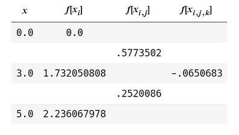

Interpolation is the process of fitting a continuous function to a set of discrete data points for the purpose of estimating intermediate values. Polynomial interpolation involves fitting an \(n^{th}\)-order polynomial that passes through \(n+1\) data points (in order to use an \(n^{th}\)-order interpolating polynomial, \(n+1\) data points are required), and using \(b_{i}\) as a stand-in for the polynomial coefficients, \(b_{1}, b_{2}, \cdots ,b_{k}\) will be uniquely determined.
There are several methods that can be used to determine the form of the unique interpolating polynomial fit to a collection of discrete data points, but we’re only going to discuss Newton’s Divided Difference method. With this approach, each new polynomial in the algorithm is obtained from its predecessor by adding a new term. Thus, in its final state, the polynomial exhibits all the previous polynomials as constituents.
Before we begin, some clarification on the terminology used throughout the post:
\(f_{n}(x)\) represents an \(n^{th}\)-order interpolating polynomial. For example, \(f_{1}(x)\) represents a first-order
interpolating polynomial, \(f_{2}(x)\) a second-order interpolating polynomial, etc… Also, \(b_{k} = f[x_{0}, x_{1}, \cdots, x_{k}]\)
represents the finite divided difference of order k. Divided differences obey the formula:
Therefore, we can say \(f[x_{0}, x_{1}, \cdots, x_{k}]\) is the coefficient of \(x^{k}\) in the polynomial \(f_{k}(x)\).
For a given set of data points \((x_{0}, f(x_{0})), (x_{1}, f(x_{1})), (x_{2}, f(x_{2}))\), the first three interpolating
polynomial coefficients are given by:
We’ll walkthrough the linear and quadratic cases prior to exploring the general case.
Calculating Interpolation Coefficients Using Divided Differences
Linear Approximation
The linear form of Newton’s Interpolating polynomial is given by:
Note that the term \(\frac{f(x_{1})-f(x_{0})}{x_{1}-x_{0}}\) is a finite divided-difference approximation of the first derivative, which also represents the slope of the line of the first-degree polynomial approximation.
Let’s approximate the \(\sqrt{x}\) between the points \(x=0\) and \(x=3\) using the points \((0, 0), (3, 1.732050808)\).
The intercept is \(b_{0}=f(x_{0})=0\), and the corresponding slope is \(b_{1}=\frac{1.732050808 - 0}{3-0} \approx.57735027.\)
The linear interpolant is therefore:
Estimating \(\sqrt{2.25}\) with our linear approximation yields \(.57735027*2.25=1.2990381\), vrs. the actual value \(\sqrt{2.25}=1.5\), which results in an error of \(\epsilon_{1} = .134\).
Note that reducing the interval between data points (estimating the linear interpolant between \(x=2.00\) and \(x=2.50\) for example) will yield a better approximation with less error.
Next we’ll estimate the quadratic interpolant starting with same two data points taken from \(\sqrt{x}\).
Quadratic Approximation
The second-order polynomial interpolant can be represented as:
where, as above, \(b_{0}\), \(b_{1}\) and \(b_{2}\) are given by:
\(b_{1}\) still represents the slope of the line connecting points \(x_{0}\) and \(x_{1}\).
The new term, \(b_{2}(x-x_{0})(x-x_{1})\) introduces second-order curvature, which should reduce the
magnitude of the error in the approximation. Using the points \((0, 0), (3, 1.732050808), (5, 2.236067978)\) to fit our quadratic
interpolant results in coefficient estimates \(b_{0}=f(x_{0})=0\), \(b_{1} = .57735027\) and \(b_{2} = -.065068337\),
yielding the second-order interpolating polynomial:
Evaluating \(f_{2}(2.25)=1.4088409\) yields a better approximation of \(\sqrt{2.25}\) than the linear
interpolant, and reduces the error to \(\approx .06077\).
Newton’s Interpolating Polynomial: General Form
The \(n^{th}\)-order interpolating polynomial is given by:
One approach used to determine coefficients for the \(n^{th}\) degree interpolating polynomial is to construct a table of finite differences, which, for an \(n^{th}\) degree interpolating polynomial, will have \(n+1\) distinct levels. Once the table has been populated, the coefficients can be obtained from the top-most diagonal, starting with \(f[x_{0}]\) for \(b_{0}\) and working toward the endpoint for higher indexed coefficients. Starting with the set of x & y points intended for interpolation, the table looks like:

Each forward node is determined by calculating \(f[x_{i},x_{j}] = \frac {f(x_{i}) - f(x_{j})}{x_{i}-x_{j}}\).
For example, here’s the grid that results from estimating coefficients for the quadratic interpolant:

Then, \(f[x_{0},x_{1}] = \frac {1.732050808 - 0}{3-0} = .5773502\), and \(f[x_{1},x_{2}] = \frac {2.236067978-1.732050808}{5.0-3.0} = .2520086\) and \(f[x_{0}, x_{1},x_{2}] = \frac {.2520086-.5773502}{5.0-0.0} = -.0650683\).
Extracting the top diagonal of coefficients from the tree above, we obtain
matching our estimate for the quadratic interpolant above.
Here’s a plot of \(\sqrt{x}\), along with the linear and quadratic interpolating polynomials:

Implementation
We can create a Python function which replicates the algorithm described above for an interpolating polynomial
of arbitrary degree. In the following section, we present two such functions: The first, interp_coeffs,
returns a tuple of interpolating coefficients generated from separate arrays of x and y values. Note that for
\(n+1\) data points, interp_coeffs will return the coefficient estimates of an \(n\)-degree polynomial. The second,
interp_val, takes the same x and y arrays, but instead of outputting a tuple of coefficients, returns a function
which can then be passed any value within the range of the initial independent variable array, and returns the
interpolated estimate evaluated at that point. This is exactly how scipy.interpolate.interp1d is leveraged, to
which we’ll compare our estimate shortly:
#===========================================================
# Netwon's Divided Difference Interpolation Implementation |
#===========================================================
def interp_coeffs(xvals, yvals):
"""
Return the divided-difference interpolating polynomial
coefficients based on xvals and yvals. The degree of
the interpolating polynomial will be inferred from data,
which will be 1 less than the number of data points.
"""
assert len(xvals)==len(yvals)
nbr_data_points = len(xvals)
# sort inputs by xvals =>
data = sorted(zip(xvals, yvals), reverse=False)
xvals, yvals = zip(*data)
depth = 1
coeffs = [yvals[0]]
iter_yvals = yvals
while depth < nbr_data_points:
iterdata = []
for i in range(len(iter_yvals)-1):
delta_y = iter_yvals[i+1]-iter_yvals[i]
delta_x = xvals[i+depth]-xvals[i]
iterval = (delta_y/delta_x)
iterdata.append(iterval)
# append top-most entries from table to coeffs =>
if i==0: coeffs.append(iterval)
iter_yvals = iterdata
depth+=1
return(coeffs)
def interp_val(xvals, yvals):
"""
Return a function representing the interpolating
polynomial determined by xvals and yvals.
"""
assert len(xvals)==len(yvals)
nbr_data_points = len(xvals)
# sort inputs by xvals =>
data = sorted(zip(xvals, yvals), reverse=False)
xvals, yvals = zip(*data)
depth = 1
coeffs = [yvals[0]]
iter_yvals = yvals
while depth < nbr_data_points:
iterdata = []
for i in range(len(iter_yvals)-1):
delta_y = iter_yvals[i+1]-iter_yvals[i]
delta_x = xvals[i+depth]-xvals[i]
iterval = (delta_y/delta_x)
iterdata.append(iterval)
# append top-most entries in tree to coeffs =>
if i==0: coeffs.append(iterval)
iter_yvals = iterdata
depth+=1
def f(i):
"""
Evaluate interpolated estimate at x.
"""
terms = []
retval = 0
for j in range(len(coeffs)):
iterval = coeffs[j]
iterxvals = xvals[:j]
for k in iterxvals: iterval*=(i-k)
terms.append(iterval)
retval+=iterval
return(retval)
return(f)
This implementation is nothing more than a recreation of Neville’s Algorithm, which is described in greater
detail here.
Returning to our attempt at approximating \(\sqrt{x}\) with various polynomial interpolants, next we demonstrate how to
obtain the interpolated estimates via interp_coeffs and interp_val:
import numpy as np
# 1st-degree approximation
x1 = [0, 3]
y1 = np.sqrt(x1).tolist()
# 2nd-degree approximation
x2 = [0, 3, 5]
y2 = np.sqrt(x2).tolist()
# 3rd-degree approximation
x3 = [0, 3, 5, 7]
y3 = np.sqrt(x3).tolist()
>>> interp_coeffs(x1, y1)
[0.0, 0.5773502691896257]
>>> interp_coeffs(x2, y2)
[0.0, 0.5773502691896257, -0.06506833684483389]
>>> interp_coeffs(x3, y3)
[0.0, 0.5773502691896257, -0.06506833684483389, 0.007610943899867132]
The results agree exactly with our earlier derivations.
Note that the output of interp_coeffs returns the intercept first, followed by higher-powered coefficients in order of increasing degree.
In order to obtain the interpolated estimate for some value within the valid range of x-values,
we first pass the x and y arrays as we did with interp_coeffs, but we then pass the value of interest to the result
of the first evaluation:
import numpy as np
# 1st-degree approximation
x1 = [0, 3]
y1 = np.sqrt(x1)
# 2nd-degree approximation
x2 = [0, 3, 5]
y2 = np.sqrt(x2)
# 3rd-degree approximation
x3 = [0, 3, 5, 7]
y3 = np.sqrt(x3)
# Assume we're interested in obtaining 1st, 2nd and 3rd-
# degree interpolated estimates at x=2.75. Using
# `interp_val`, we'd proceed as follows:
>>> est1 = interp_val(x1, y1)
>>> est1(2.75)
1.5877132402714706
>>> est2 = interp_val(x2, y2)
>>> est2(2.75)
1.632447721852294
>>> est3 = interp_val(x3, y3)
>>> est3(2.75)
1.644220900697401
We compare our results to scipy.interpolate.interp1d, the primary method used for 1-dimensional interpolation in
scipy. The API for scipy.interpolate.interp1d is identical to interp_val, but takes an additional argument to
specify what degree interpolant to estimate. We now verify that both functions return the same set of results:
import numpy as np
from scipy import interpolate
# 1st-degree approximation
x1 = [0, 3]
y1 = np.sqrt(x1)
# 2nd-degree approximation
x2 = [0, 3, 5]
y2 = np.sqrt(x2)
# 3rd-degree approximation
x3 = [0, 3, 5, 7]
y3 = np.sqrt(x3)
# Using scipy's interpolate.interp1d to obtain interpolated estimates:
>>> est1 = interp1d(x1, y1, kind='linear')
>>> est1(2.75)
array(1.5877132402714706)
est2 = interp1d(x2, y2, kind='quadratic')
>>> est2(2.75)
array(1.632447721852294)
>>> est3 = interp1d(x3, y3, kind='cubic')
>>> est3(2.75)
array(1.6442209006974007)
One difference between the two implementations is that interpolate.interp1d returns the estimate in the form of an array.
This is due to the fact that interp1d can take an array of inputs in addition to single-valued input, and so returns all
estimates in the form of an array. I/O differences aside, note that both functions return identical results for estimates
of all degrees tested.
A word of caution: Runge’s phenomenon is a problem of oscillation at the edges of an interval that occurs when using polynomial interpolation with polynomials of high degree 1. If 3rd or 4th-degree interpolating polynomials do not provide a ‘natural’ enough fit to the data, consider instead cubic spline interpolation, which will be covered in a future post. Until then, happy coding!